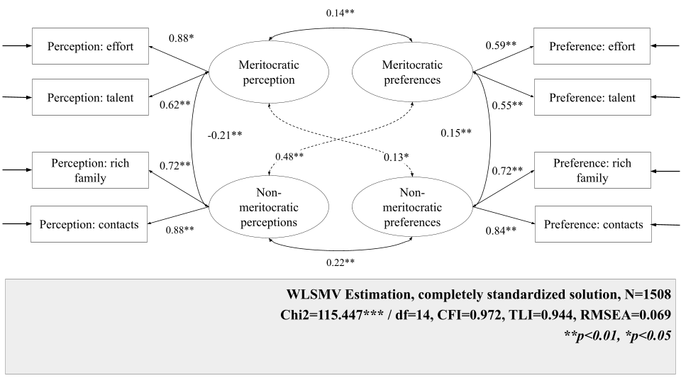

![]()
| Components | Dimensions | Item (English) | Item original (Spanish) |
|---|---|---|---|
| Perception | Meritocratic | In Chile people are rewarded for their efforts | En Chile las personas son recompensadas por sus esfuerzos |
| In Chile people are rewarded for their intelligence and ability | En Chile las personas son recompensadas por su inteligencia y habilidad | ||
| Non meritocratic | In Chile those with wealthy parents do much better in life | En Chile a quienes tienen padres ricos les va mucho mejor en la vida | |
| In Chile those with good contacts do much better in life | En Chile a quienes tienen buenos contactos les va mejor en la vida | ||
| Preference | Meritocratic | Those who work harder should reap greater rewards than those who work less hard | Quienes más se esfuerzan deberían obtener mayores recompensas que quienes se esfuerzan menos |
| Those with more talent should reap greater rewards than those with less talent | Quienes poseen más talento deberían obtener mayores recompensas que quienes poseen menos talento | ||
| Non meritocratic | It is good that those who have rich parents do better in life | Está bien que quienes tengan padres ricos les vaya mejor en la vida | |
| It is good that those who have good contacts do better in life | Está bien que quienes tengan buenos contactos les vaya mejor en la vida |
This document was last modified at 2026-01-29 18:33:13 and it was last rendered at 2026-01-29 18:33:13.
1 Introduction
Despite rising economic inequality and limited social mobility in contemporary societies (Chancel et al., 2025; López-Roldán & Fachelli, 2021), meritocratic beliefs remain remarkably high among citizens (Mijs, 2019; Sandel, 2020). Meritocracy refers to the idea that social rewards are (and should be) allocated based on effort and ability rather than social origins or connections (Young, 1958). Schools, long associated with opportunity and mobility, are a prime site of early socialization of this belief: beyond achievement narrative, grading, tracking, and selection make “merit” visible and consequential (Darnon et al., 2018; Traini, 2022). However, the promise of education as an equalizer is undermined by persistent inequalities in later outcomes and by evidence that schooling often reproduces inequality through stratified and unequal learning environments (Bourdieu & Passeron, 1990; Goudeau & Croizet, 2017; Zhou, 2019). This tension makes schools critical arenas where meritocratic beliefs are formed and can function as an ideological lens: interpreting outcomes as fair reflections of merit can obscure structural disadvantages and legitimize hierarchies (Batruch et al., 2022; Lampert, 2013; Mijs, 2016b; Tang et al., 2025; Wiederkehr et al., 2015). Understanding how young people perceive and endorse these beliefs is therefore crucial for tracing early links between schooling, fairness, and inequality.
Regardless of its importance, empirical research on meritocratic beliefs remains conceptually and operationally fragmented. In studies using survey data, measures range from broad attitudes toward mobility and inequality to implicit beliefs about success, responsibility, and structural constraints (Castillo et al., 2019; Trump, 2020). Besides, most studies rely on single-dimensional indicators and often conflate descriptive perceptions (how meritocracy works) with normative preferences (how it should work) (C. Liu & Wang, 2025; Tang et al., 2025). A related problem concerns the incorporation of non-meritocratic elements. Even when researchers distinguish merit factors from non-meritocratic ones (e.g., family wealth or connections), these dimensions are often collapsed into a single continuum through subtraction or reverse-coding (as did by Reynolds & Xian, 2014). This practice embeds a zero-sum assumption that is theoretically nontrivial and empirically risky: if merit and non-merit beliefs can coexist (“dual consciousness”), increasing recognition of non-merit barriers may mechanically appear to be a decline in meritocracy (Zhu, 2025). In schools — where these beliefs are learned, negotiated, and reinforced — this measurement problem is especially consequential because it can distort how we interpret age differences and change over time (Batruch et al., 2022; Elenbaas, 2019).
To move beyond these limitations, in the present paper we test a multidimensional approach that treats perceptions and preferences, as well as meritocratic and non-meritocratic principles, as distinct dimensions. Castillo et al. (2023) proposed such a conceptual and measurement framework, which has received support in adult populations but has not yet been tested among school-aged students in everyday school contexts. Building on research on the early formation of distributive beliefs and meritocratic perceptions in schools (Batruch et al., 2022; Darnon et al., 2018; Tang et al., 2025; Wiederkehr et al., 2015), this paper extends a multidimensional approach to meritocratic beliefs to early adolescence. Our research question are: Do school-aged students distinguish between meritocratic and non-meritocratic principles, and between perceptions (“what is”) and preferences (“what should be”)? Additionally, Can these dimensions be measured in ways that are comparable across age cohorts and consistent over time? We argue that this conception of meritocracy clarifies what adolescents actually endorse—descriptions, ideals, or both—and provides the basis for measurement required for developmental and longitudinal inference. For this, we use novel survey data to implement measurement invariance for evaluating the stability and comparability of meritocratic beliefs across two age cohorts (8th and 10th graders) and two waves (2023 and 2024).
2 Theoretical and empirical background
2.1 Meritocratic perceptions and preferences
Meritocracy refers to a distributive system in which individual merit—typically defined as effort and talent—is treated as the primary criterion for allocating resources and rewards, rather than social origins or inherited privilege (Bell, 1972; Young, 1958). While Young (1958) coined the term as a dystopian critique of a society that justifies power and status through “achievement,” it has since been re-appropriated as a positive ideal of fairness, especially in liberal and market-oriented societies (Dubet, 2011; Mijs, 2019; Van De Werfhorst, 2024). From a sociological standpoint, meritocracy is not only a cognitive judgement about how inequality works; it is also a moral lens through which people interpret differences in income, status, and life chances (Castillo et al., 2019). Precisely because it frames outcomes as earned, meritocratic ideals can end up reinforcing inequality: “winners” are encouraged to see their position as deserved, while “losers” are pushed toward self-blame rather than structural critique (Mijs, 2016a; Sandel, 2020; Wilson, 2003). The key point is that meritocracy often promises to mitigate inherited advantage, but in practice, it can legitimize unequal structures by translating social privilege into individualized narratives of deservingness.
A significant limitation in the extant literature is the way “meritocratic beliefs” have been measured in survey studies. As Castillo et al. (2023) argues, most research relies on item batteries that assess the importance of effort, talent, family background, networks, or luck for “getting ahead” and then reduces these factors to a single score. This becomes especially problematic when researchers construct a difference or continuum measure—treating meritocratic and non-meritocratic explanations as opposite ends of the same scale (e.g., by subtracting “non-merit” from “merit,” as in the Reynolds & Xian (2014) approach). The underlying assumption is that endorsing merit must imply rejecting structural or relational advantages, leaving the possibility of the coexistence of apparently opposed beliefs out of empirical test. Recent work has explicitly raised this issue: C. Liu & Wang (2025) emphasizes that meritocratic endorsement may be stable while recognition of structural constraints changes; Tang et al. (2025) motivates “dual consciousness” but still risks obscuring it when operationalizations force relative trade-offs; and Zhu (2025) argues directly that meritocratic and structural explanations are not zero-sum, but often accumulate rather than replace one another. The measurement implication is essential but straightforward: if people can simultaneously believe that effort matters and that family resources or connections matter, then unidimensional indices (and especially subtraction scores) can manufacture artificial “neutral” positions and blur substantively distinct belief profiles.
Castillo et al. (2023) address these problems by decomposing “meritocratic beliefs” along two analytically independent axes: preferences versus perceptions, and meritocratic versus non-meritocratic allocation principles. Preferences capture normative ideals about how rewards should be distributed (e.g., whether effort and ability ought to determine life chances). In contrast, perceptions capture descriptive evaluations of how society actually works (e.g., whether observed inequalities reflect merit-based processes) (Janmaat, 2013). In parallel, the framework conceptualizes meritocratic elements (e.g., effort, talent) and non-meritocratic elements (e.g., social origins, inherited privilege, networks) as distinct components rather than as opposite poles of a single continuum. This yields four non-redundant constructs—meritocratic preferences, meritocratic perceptions, non-meritocratic preferences, and non-meritocratic perceptions—thus allowing combinations that older measures tend to collapse, such as endorsing meritocracy as an ideal while recognizing the weight of family background and connections. A practical advantage of this instrument is its minimalist design, which makes it well-suited for large-scale surveys with limited questionnaire space; however, this parsimony entails a trade-off, as each factor is measured with only two items, potentially constraining reliability and content coverage relative to longer batteries. In the adult population in Chile, the authors show that respondents differentiate among these dimensions and that these dimensions are systematically related; for instance, stronger perceptions that non-meritocratic factors are rewarded tend to co-occur with stronger preferences for meritocratic allocation. This configuration aligns with Zhu’s (2025) “dual consciousness,” here specified as the coexistence of (a) meritocratic and non-meritocratic beliefs and (b) legitimacy judgments (“should”) alongside descriptive assessments (“is”).
Research in adult populations has mapped both the determinants and consequences of meritocratic perceptions. On the “causes” side, higher-status individuals —those with more education, income, and occupational prestige—and upward mobile individuals are consistently more likely to endorse merit-based explanations for social outcomes (Duru-Bellat & Tenret, 2012; García-Sánchez et al., 2018; Mijs et al., 2022; Traini et al., 2025). On the “consequences” side, perceiving one’s society as meritocratic is associated with lower support for redistribution and egalitarian policies (Hoyt et al., 2023; Pañeda-Fernández et al., 2026; Tejero-Peregrina et al., 2025), as well as greater acceptance of inequality and market-based allocation logics (Castillo et al., 2025, 2019). Experimental evidence is consistent with a causal pathway in which exposure to upward-mobility information or “self-made” narratives reduces redistributive support and increases tolerance of inequality and system-justifying orientations, whereas exposure to low or downward mobility produces the opposite pattern—effects that are often partly mediated by strengthened meritocratic perceptions (Deng & Wang, 2025; Matamoros-Lima et al., 2025). Taken together, this literature suggests that meritocratic perceptions are systematically associated with social position and redistributive attitudes. In particular, they are associated with whether inequality is interpreted primarily as the outcome of individual performance or as a condition that warrants collective intervention.
Finally, meritocracy is deeply entangled with schooling, making education a crucial agent of socialization. Schools are key institutions for advancing meritocratic ideals—through evaluation, grading, selection, and credentials that signal that effort and ability should be rewarded—while also being settings in which non-meritocratic advantages (family resources, cultural capital, peer environments, and unequal school quality) remain visible and consequential (Batruch et al., 2022; Resh & Sabbagh, 2014). This duality helps explain why students may endorse meritocracy as an ideal while recognizing structural constraints, a pattern highlighted in education-focused work on “dual consciousness” (C. Liu & Wang, 2025; Tang et al., 2025).
2.3 This study
Given the relevance of meritocracy during school-age as stated above, this study aims to examine how students understand meritocracy during this formative stage of socialization—schooling—and whether these understandings can be reliably and comparably measured. Building on Castillo et al.’s (2023) conceptual and measurement framework, we test whether students are able to differentiate between (i) perceptions about how meritocracy actually operates in Chile (“what is”) and (ii) preferences about how it should operate (“what ought to be”), and whether these judgments distinguish meritocratic elements (effort, talent) from non-meritocratic elements (family wealth, personal contacts). Empirically, beyond assessing factorial validity, the paper focuses on measurement stability—whether the same latent constructs are captured comparably across age cohorts and across time within the same students.
2.3.1 Hypotheses
H_1 (Dimensional differentiation). Students’ meritocratic beliefs are best represented by four distinct factors: perceived meritocracy, perceived non-meritocracy, preferred meritocracy, and preferred non-meritocracy.
H_2 (Between-cohort measurement invariance). The four-factor model of meritocratic beliefs is invariant across age cohorts.
H_3 (Longitudinal measurement invariance). The four-factor model of meritocratic beliefs is invariant across waves within students.
3 Method
3.1 Participants
This study draws on secondary data from the Panel Survey on Education and Meritocracy (EDUMER) for the 2023 and 2024 waves, covering school-age students1. The primary objective of the survey was to examine students’ beliefs, attitudes, and behaviors concerning meritocracy, inequality, and citizenship. The questionnaire was administered to sixth-grade and first-year secondary students from nine schools in the Metropolitan and Valparaíso regions of Chile. The sampling strategy was non-probabilistic and lacked quota controls; however, a minimum sample size of 900 students was established to ensure adequate statistical power. After data processing and the elimination of missing cases (listwise deletion), the final analytical sample comprises 846 students for the first wave (386 girls, 421 boys, 39 identifying as other; M_{age} = 13.4, SD_{age} = 1.6), and the second wave followed 662 of them (303 girls, 338 boys, 21 identifying as other; M_{age} = 14.4, SD_{age} = 1.6), corresponding to a retention rate of 78.3% (attrition 21.7%). The primary causes of attrition were school transfers between academic years and student absenteeism, which was reported to be high in several establishments.
3.2 Procedure
Data collection was conducted by a professional research firm using a Computer-Assisted Web Interviewing (CAWI) approach, based on online questionnaires. All participants received an informed consent form that was reviewed and validated by a parent or legal guardian before participation. To enable longitudinal linkage while protecting confidentiality, the survey firm generated anonymous unique identifiers for each student; no directly identifying information (e.g., names) was collected for students or their guardians in the analytic files. The study received ethical approval from the Research Ethics Committee at the Faculty of Social Sciences, University of Chile. The committee determined that the project posed minimal risk and approved the consent and confidentiality procedures described in the ethical assessment report.
3.3 Measures
3.3.1 Scale of Perceptions and Preferences on Meritocracy
Meritocratic and non-meritocratic perceptions and preferences were measured using the same items proposed in the original scale (Castillo et al., 2023). Each of the four dimensions of the scale is measured by two items. The dimensions are:
Perceived meritocracy: the extent to which effort and ability are rewarded in Chile,
Perceived non-meritocracy: the extent to which success is perceived as linked to connections and family wealth.
Preference for meritocracy: agreement with that those who work harder or are more talented should be better rewarded.
Preference for non-meritocracy: agreement with that it is acceptable for individuals with better connections or wealthy parents to achieve greater success (see Table 1).
Each item is rated on a four-point Likert scale ranging from “strongly disagree” (1) to “strongly agree” (4), therefore higher scores indicate stronger endorsement of the corresponding perception or preference.
3.3.2 Cohort level
To distinguish students’ academic level across waves for conditional and multi-group invariance analyses, we created a cohort indicator capturing whether the respondent belonged to the primary (sixth grade) or secondary (first-year secondary) cohort at the time of each survey wave. Descriptive statistics2 by cohort are reported in Table 2.
| Cohort level | N | Mean | SD | Man | Women | Others |
|---|---|---|---|---|---|---|
| Primary | 725 | 12.28 | 0.74 | 356 | 336 | 33 |
| Secondary | 783 | 15.22 | 0.92 | 403 | 353 | 27 |
3.4 Analytical strategy
3.4.1 Measurement model and estimation
To evaluate the underlying structure of the scale, we employed Confirmatory Factor Analysis (CFA) based on a measurement model with four latent factors, using Diagonally Weighted Least Squares with robust correction (WLSMV) estimation. This estimator is particularly suitable for ordinal data, such as four-point Likert-type scales, as it avoids the bias associated with treating categorical data as continuous (Kline, 2023).
Model fit was assessed following the guidelines of Brown (2015), using several indices: the Comparative Fit Index (CFI) and the Tucker-Lewis Index (TLI), with acceptable values above 0.95; the Root Mean Square Error of Approximation (RMSEA), with values below 0.06 indicating good fit; and the Chi-square statistic (acceptable fit indicated by p > 0.05 and a Chi-square/df ratio < 3).
3.4.2 Measurement invariance
A key contribution of this study is the assessment of the metric stability of the measurement model using factorial invariance testing (Davidov et al., 2014). We implemented two complementary strategies: invariance across cohorts (primary vs. secondary school students) and longitudinal invariance using two panel waves. Given the ordinal nature of the items, we estimated measurement invariance using methods appropriate for ordered categorical measures, following the analysis by Liu et al. (2017). Setting a hierarchical approach, we tested four nested models: configural (equal factorial structure), metric (equal factor loadings), scalar (equal intercepts and thresholds), and strict invariance (equal residual variances).
In addition to the traditional Chi-square difference test for model comparisons, we used changes in fit indices to assess invariance: a change in CFI (\Delta \geq -0.010) and RMSEA (\Delta \geq 0.0) were adopted as more robust and sample-size-independent criteria, following Chen’s recommendations (2007).
All analyses were performed using the lavaan package in R version 4.2.2. The hypotheses of this research were pre-registered on the Open Science Framework (OSF).
4 Results
4.1 Measurement model
Figure 1 presents the standardized factor loadings and the overall fit of the general measurement model that pooled together the entire analytical sample (cohorts and waves). The model shows acceptable fit according to conventional benchmarks (CFI = 0.937; TLI = 0.873; RMSEA = 0.069), indicating that the proposed four-factor structure provides a reasonable summary of the covariance pattern in the combined sample.

Standardized loadings are generally moderate to strong and vary across dimensions. For meritocratic perceptions, both items load positively, with effort showing a particularly strong loading (\beta = 0.88) and talent a moderate one (\beta = 0.62). Meritocratic preferences display more balanced—and somewhat weaker—loadings for effort (\beta = 0.59) and talent (\beta = 0.55). For non-meritocratic perceptions, both indicators load strongly, especially contacts (\beta = 0.88) and, to a lesser extent, coming from a rich family (\beta = 0.72). Non-meritocratic preferences show similarly strong and balanced loadings, with contacts (\beta = 0.84) and rich family (\beta = 0.72), suggesting that both items capture this latent dimension to a comparable degree.
The latent correlations indicate a differentiated structure. Meritocratic perceptions and meritocratic preferences are positively correlated (r = 0.14), consistent with some alignment between what students think is rewarded and what they think should be rewarded. Meritocratic and non-meritocratic perceptions are negatively correlated (r = −0.21), suggesting that students who perceive greater meritocracy in society tend to view a weaker role for connections and family wealth. At the same time, non-meritocratic perceptions are positively related to meritocratic preferences, suggesting that perceiving society as rewarding contacts and wealth may coincide with stronger endorsement of meritocratic ideals. Finally, meritocratic and non-meritocratic preferences are modestly positively correlated (r = 0.15), and non-meritocratic perceptions and preferences are also positively associated (r = 0.22), indicating that recognizing non-meritocratic mechanisms in practice is linked to greater acceptance of them as legitimate, albeit to a moderate extent.
4.2 Invariance analysis
We assessed measurement invariance through a hierarchical sequence of nested confirmatory factor analysis models, imposing progressively stronger equality constraints to evaluate whether the measurement model was comparable across time and cohorts. For longitudinal invariance, we followed the approach in Y. Liu et al. (2017) and estimated the model simultaneously across the two waves, starting with a configural model that specified the same factor structure at each wave while allowing item parameters (factor loadings, thresholds/intercepts, and residual variances) to vary freely; this model served as the baseline for subsequent comparisons. We then tested metric (weak) invariance by constraining factor loadings to equality across waves, followed by scalar (strong) invariance by additionally constraining item thresholds (and, where applicable, intercepts) to equality over time—an essential step with ordered-categorical indicators to ensure that response categories map onto equivalent points on the latent continuum and thus permit meaningful comparisons of latent means. Finally, we evaluated strict invariance by further constraining residual variances to equality across waves. To assess invariance between cohorts, we followed the sequential procedure proposed by Svetina et al. (2020) for ordinal indicators: we estimated a configural model, then a threshold-invariant model, and finally a model that jointly constrained thresholds and factor loadings across groups.
In the following sections, we proceed as follows. First, we present descriptive statistics for the meritocracy scale among the comparison groups. Second, we present the results of the measurement invariance analyses, emphasizing the highest level of invariance achieved in each comparison. Finally, we examine potential sources of non-invariance to identify which items or parameters are responsible for the lack of equivalence.
4.2.1 Longitudinal invariance
Figure 2 display the response distributions for the meritocracy scale, distinguishing perceptions (Panel A) from preferences (Panel B) across waves. In Wave 1 perceptions, agreement is highly concentrated across items, especially for contacts (77%), talent (74%), and having rich parents (71%), with effort also widely endorsed (67%); at the same time, sizeable minorities disagree (33% for effort, 29% for rich parents, and 27% for talent), indicating a dual recognition in which students strongly acknowledge non-meritocratic determinants (contacts and parental wealth) while, within meritocratic dimensions, viewing talent as more influential than effort—the least perceived as rewarded. Wave 1 preferences show the inverse pattern: effort is overwhelmingly endorsed as the legitimate basis for rewards (87%), far exceeding its perceived role in practice; views on talent are split (54% agree, 45% disagree); parental wealth remains nearly evenly divided; and contacts are relatively more accepted than rejected (61% vs. 39%), suggesting that this factor is not uniformly considered illegitimate in the “ideal” society.

Wave 2 largely replicates these patterns with modest shifts. In perceptions, endorsement of effort declines (62%), whereas contacts (76%), talent (70%), and parental wealth (70%) remain consistently high. In preferences, support for effort remains extremely stable (88%), while support for talent declines, with disagreement rising to 51%. Attitudes toward parental wealth remain evenly divided, and contacts continue to be more accepted than rejected (59% vs. 41%), albeit far below the near-consensus around effort. Overall, both waves reveal a stable gap: students perceive social outcomes as strongly shaped by non-meritocratic factors (especially contacts and family wealth) and, to a lesser extent, talent, yet they overwhelmingly endorse an effort-centered meritocratic ideal. This persistent divergence between perceived reality and normative preferences highlights a key paradox—strong support for meritocracy as a principle alongside skepticism about its realization in practice.
Table 3 reports the results of the longitudinal invariance tests. Overall, the scale achieved the strongest level of invariance (strict invariance) across the two waves. The strict model showed good fit, \chi^2(84) = 130.17, CFI = 0.991, RMSEA = 0.031 (90% CI: 0.020–0.040). Moreover, compared with the strong (scalar) model, the deterioration in fit was negligible: \Delta \chi^2(4) = 1.635, \DeltaCFI = 0.000, and \DeltaRMSEA = -0.002. These differences fall well within commonly used cutoffs for invariance evaluation (Chen, 2007), indicating that constraining residual variances in addition to loadings and thresholds/intercepts is tenable. Substantively, this implies that the item–factor relations are stable over time (metric invariance) and that, for a given level of the latent trait, respondents are expected to endorse the same response categories across waves (scalar invariance), supporting the comparability of scores and latent parameters within students over time.
| Model | χ^2 (df) | CFI | RMSEA (90 CI) | Δ χ^2 (Δ df) | Δ CFI | Δ RMSEA | Decision |
|---|---|---|---|---|---|---|---|
| Configural | 117.7 (68) | 0.991 | 0.035 (0.024-0.046) | 0 (0) | 0 | 0.000 | Reference |
| Weak | 122.51 (72) | 0.990 | 0.034 (0.024-0.045) | 4.809 (4) | 0 | -0.001 | Accept |
| Strong | 128.53 (80) | 0.991 | 0.032 (0.021-0.042) | 6.02 (8) | 0 | -0.002 | Accept |
| Strict | 130.17 (84) | 0.991 | 0.031 (0.02-0.04) | 1.635 (4) | 0 | -0.002 | Accept |
Taken together, the results support full longitudinal measurement invariance—configural, metric, scalar, and strict—suggesting that the constructs are measured equivalently across waves. This provides a strong basis for comparing latent means as well as variances/covariances and structural relations over time. As an additional diagnostic, we examined potential sources of localized misfit using univariate score tests at each step of the invariance hierarchy (configural, metric, scalar, and strict) via lavTestScore in lavaan. The score tests did not reveal statistically meaningful violations of the imposed equality constraints: loadings were supported at the metric level; loadings and thresholds remained stable in the scalar model; and residual variances also appeared invariant under the strict model. The most significant modification signal concerned one threshold of the preference-for-talent indicator (\chi^2 = 3.829, p > .050), which did not reach conventional significance. Full score-test outputs are reported in the supplementary materials.
4.2.2 Cohort invariance
Figure 3 shows response distributions by cohort, separating perceptions and preferences. In primary education, perceived rewards are similar for effort and talent (both 76% agree). Contacts (67%) and a rich-family background (59%) are also seen as rewarded, and these non-meritocratic factors elicit the most disagreement within the cohort (41% disagree with rich-family background; 33% with contacts). In preferences, effort is clearly dominant (84% agree), whereas talent and a rich family background split evenly. Notably, 62% view it as good that those who have good contacts do better in life (39% disagree).

In secondary education, perceptions shift: disagreement that effort is rewarded increases (45%), and agreement decreases (55%). Disagreement about talent also increases (31%). The largest differences concern non-meritocratic factors, which are overwhelmingly perceived as rewarded (82% for rich-family background; 86% for contacts), with a stronger concentration in the highest agreement category. Preferences again strongly favor effort (92%), while views on talent, rich-family background, and contacts remain mixed (roughly 45% disagree to 58% agree across items).
| Model | χ^2 (df) | CFI | RMSEA (90 CI) | Δ χ^2 (Δ df) | Δ CFI | Δ RMSEA | Decision |
|---|---|---|---|---|---|---|---|
| Configural | 24.95 (26) | 1.000 | 0 (0-0.037) | 0 (0) | 0.000 | 0.000 | Reference |
| Tresholds | 57.56 (34) | 0.991 | 0.041 (0.021-0.058) | 32.615 (8) *** | -0.009 | 0.041 | Reject |
| Tresholds + Loadings | 72.35 (38) | 0.987 | 0.046 (0.03-0.062) | 14.789 (4) ** | -0.004 | 0.006 | Reject |
Table 4 summarizes the cohort invariance tests. Overall, the results indicate that the scale achieves only configural invariance between primary and secondary students (i.e., the same four-factor structure), but fails to reach threshold and thus also fails to reach metric/scalar invariance. When equality constraints on thresholds were imposed, model fit (\DeltaCFI = −.003; \DeltaRMSEA = .006) deteriorated beyond commonly used criteria (Chen, 2007), implying systematic differences in how response categories map onto the latent constructs across cohorts. In substantive terms, this means that primary and secondary students do not use the response scale equivalently when evaluating the acceptability of meritocratic and non-meritocratic criteria, which limits direct comparisons of latent scores across educational levels.
To identify the source of non-invariance, we inspected univariate score tests using lavTestScore. The largest misfit was concentrated in the thresholds of the effort-perception item, indicating that cohort differences are driven less by the factor structure than by differential category functioning in this specific indicator. Substantively, primary and secondary students appear to use the response options differently when assessing whether effort is rewarded in society, consistent with developmental and socialization processes through which older students may adopt a more critical view of the extent to which effort translates into success.
4.2.3 Conditional longitudinal invariance by cohort
Despite the absence of cohort measurement invariance, we examined whether plausible cohort-related heterogeneity could compromise longitudinal invariance by re-estimating the longitudinal invariance sequence while controlling for cohort (dummy-coded) as a covariate predicting each latent factor. Model fit remained good across all steps—from the configural baseline to the strict model—and consistently met conventional standards; for instance, the strict invariance model with cohort control showed \chi^2(92) = 131.64, CFI = .991, and RMSEA = .027. Importantly, including cohort as a predictor did not materially alter model fit or the invariance conclusions, suggesting that the equality constraints over time are tenable even after accounting for cohort differences in average factor levels.
| Model | χ^2 (df) | CFI | RMSEA (90 CI) | Δ χ^2 (Δ df) | Δ CFI | Δ RMSEA | Decision |
|---|---|---|---|---|---|---|---|
| Configural | 122.27 (76) | 0.990 | 0.032 (0.021-0.042) | 0 (0) | 0.000 | 0.000 | Reference |
| Weak | 126.95 (80) | 0.990 | 0.032 (0.021-0.042) | 4.684 (4) | 0.000 | -0.001 | Accept |
| Strong | 128.55 (88) | 0.991 | 0.028 (0.017-0.038) | 1.598 (8) | 0.001 | -0.004 | Accept |
| Strict | 131.64 (92) | 0.991 | 0.027 (0.016-0.037) | 3.086 (4) | 0.000 | -0.001 | Accept |
This result has two main implications. First, it strengthens the claim that the measurement properties of the scale are temporally stable within individuals: observed over-time comparisons are not driven by shifts in how primary versus secondary students use the response categories, but reflect stability (or change) in the underlying latent constructs. Second, it clarifies the scope of the cohort non-invariance finding. Non-invariance across cohorts appears to be primarily a cross-sectional comparability problem—limiting direct comparisons of latent means or observed scores between educational levels at a given wave—rather than a threat to longitudinal analyses pooling both cohorts. Therefore, analyses of within-person change and over-time associations can be interpreted with greater confidence, while cohort contrasts should be treated cautiously (or handled via partial invariance, alignment, or cohort-specific models).
5 Discussion
A first area to highlight from the results is the empirical support for the four-factor structure distinguishing perceptions and preferences of meritocracy and non-meritocracy among adolescents. The overall fit indices were consistently strong in both primary and secondary school cohorts, suggesting that the multidimensional framework maintains conceptual validity beyond adult populations. This constitutes a significant extension of previous studies, as it demonstrates that even at early stages of adolescence, students are able to differentiate between how they believe society distributes rewards (perceptions) and how they think it ought to (preferences). In line with Batruch et al. (Batruch et al., 2022) and Elenbaas (Elenbaas, 2019), these findings reinforce the idea that adolescence represents a formative period during which distributive beliefs begin to crystallize around both normative ideals and lived experiences of inequality.
Secondly, the results point to meaningful differences between students’ cohorts. While configural invariance was supported, further restrictions on thresholds and factor loadings indicated that scalar and strong invariance could not be established. This suggests that the interpretation of meritocratic and non-meritocratic items is not fully equivalent between primary and secondary students. In practical terms, this implies that the salience and meaning of effort, talent, wealth, and social connections shift as students progress through school. These findings resonate with previous evidence showing that schooling itself reconfigures how children understand the relationship between achievement and fairness (Dubet, 2011; Goudeau & Croizet, 2017). Rather than viewing the lack of invariance as a measurement failure, it may be interpreted as evidence of the dynamic and socially embedded nature of meritocratic beliefs, which evolve as students become increasingly exposed to evaluative practices and stratified educational trajectories.
Third, the item-level results add nuance to this interpretation. In the primary cohort, meritocratic preferences appeared more strongly tied to talent than to effort, whereas in the secondary cohort this pattern was reversed. This inversion suggests that students’ understandings of “deservingness” are not static but reassessed through schooling experiences: younger students may valorize innate ability, while older students—more embedded in competitive grading systems—place greater importance on sustained effort. These findings underscore the value of examining meritocracy not as a static construct but as one continuously reinterpreted through institutional practices, family socialization, and broader cultural narratives (Henry & Saul, 2006; Resh & Sabbagh, 2014).
6 Conclusion
This study validates the multidimensional model of meritocratic beliefs among school-age youth in Chile, demonstrating that adolescents can clearly distinguish between how rewards are actually distributed (perceptions) and how they should be distributed (preferences). Evidence provided by the longitudinal invariance test suggests that these constructs are psychometrically robust and stable in individuals over time. This confirms that, even in early adolescence, students have a crystallized understanding of distributive justice that can be used to track the long-term impact of educational socialization.
A key finding is the “meritocratic paradox”: students recognize the significant influence of structural advantages, such as family wealth and social connections, but continue to defend effort as the main normative ideal. In the Chilean school system, characterized by commodification and segregation, this disconnect suggests that meritocratic narratives may function as an ideology that justifies the system. By maintaining belief in the ideal of merit despite recognizing a non-meritocratic reality, students may inadvertently legitimize structural inequalities, internalizing academic outcomes as personal failures rather than systemic results.
The lack of invariance across groups reveals a significant change in development, as the balance between talent and effort is reconfigured during the transition to secondary education. This suggests that schools are active agents of socialization that reshape the “moral economy” of success in response to increased institutional competition. Ultimately, these results underscore how educational experience provides the ideological framework that underpins broader patterns of disparity. As Chile grapples with demands for structural reform, understanding how these early beliefs are formed remains crucial to addressing the cultural reproduction of inequality.
For future studies, it is relevant to apply this measurement model in new cases and diverse institutional settings to test its generalization beyond the current sample. Researchers should explore how these meritocratic dimensions relate to market justice preferences—such as attitudes toward the privatization of healthcare and pensions—to determine whether school socialization directly predicts broader political orientations. Furthermore, the incorporation of experimental vignettes or qualitative interviews could clarify why students continue to endorse the ideal of “effort” despite recognizing that “connections” are an important factor for success. Finally, future longitudinal designs should extend beyond two waves to capture the impact of high-risk transitions, such as access to higher education, on the stability of these distributional beliefs.
7 References
Batruch, A., Jetten, J., Van de Werfhorst, H., Darnon, C., & Butera, F. (2022). Belief in School Meritocracy and the Legitimization of Social and Income Inequality. Social Psychological and Personality Science, 194855062211110. https://doi.org/10.1177/19485506221111017
Bell, D. (1972). On equality: I. Meritocracy and equality. The Public Interest, 29, 29–68.
Bernstein, B. (2005). Theoretical Studies Towards a Sociology of Language.
Bourdieu, P. (2007). El sentido práctico. Buenos Aires: Siglo Veintiuno Argentina.
Bourdieu, P., & Passeron, J. C. (1990). Reproduction in Education, Society and Culture (Second Edition). Sage Publications Ltd.
Brown, T. A. (2015). Confirmatory factor analysis for applied research (Second edition). New York London: The Guilford Press.
Castillo, J. C., Iturra, J., Maldonado, L., Atria, J., & Meneses, F. (2023). A Multidimensional Approach for Measuring Meritocratic Beliefs: Advantages, Limitations and Alternatives to the ISSP Social Inequality Survey. International Journal of Sociology, 53(6), 448–472. https://doi.org/10.1080/00207659.2023.2274712
Castillo, J. C., Laffert, A., Carrasco, K., & Iturra-Sanhueza, J. (2025). Perceptions of inequality and meritocracy: Their interplay in shaping preferences for market justice in Chile (2016–2023). Frontiers in Sociology, 10, 1634219. https://doi.org/10.3389/fsoc.2025.1634219
Castillo, J. C., Torres, A., Atria, J., & Maldonado, L. (2019). Meritocracia y desigualdad económica: Percepciones, preferencias e implicancias. Revista Internacional de Sociología, 77(1), 117. https://doi.org/10.3989/ris.2019.77.1.17.114
Chancel, L., Gómez-Carrera, R., Moshrif, R., & Piketty, T. (2025). World Inequality Report 2026. World Inequality Lab, wir2026.wid.world.
Chen, F. F. (2007). Sensitivity of Goodness of Fit Indexes to Lack of Measurement Invariance. Structural Equation Modeling: A Multidisciplinary Journal, 14(3), 464–504. https://doi.org/10.1080/10705510701301834
Darnon, C., Wiederkehr, V., Dompnier, B., & Martinot, D. (2018). “Where there is a will, there is a way”: Belief in school meritocracy and the social-class achievement gap. British Journal of Social Psychology, 57(1), 250–262. https://doi.org/10.1111/bjso.12214
Davidov, E., Meuleman, B., Cieciuch, J., Schmidt, P., & Billiet, J. (2014). Measurement Equivalence in Cross-National Research. Annual Review of Sociology, 40(Volume 40, 2014), 55–75. https://doi.org/10.1146/annurev-soc-071913-043137
Deng, Y., & Wang, F. (2025). It’s my fault, I should try harder! The narratives of self-made upward mobility sustain belief in meritocracy in low social mobility context. British Journal of Psychology, bjop.70015. https://doi.org/10.1111/bjop.70015
Dubet, F. (2011). Repensar la justicia social (Sexta Edición). Siglo XXI.
Duru-Bellat, M., & Tenret, E. (2012). Who’s for Meritocracy? Individual and Contextual Variations in the Faith. Comparative Education Review, 56(2), 223–247. https://doi.org/10.1086/661290
Elenbaas, L. (2019). Against unfairness: Young children’s judgments about merit, equity, and equality. Journal of Experimental Child Psychology, 186, 73–82. https://doi.org/10.1016/j.jecp.2019.05.009
García-Sánchez, E., Willis, G. B., Rodríguez-Bailón, R., Palacio Sañudo, J., David Polo, J., & Rentería Pérez, E. (2018). Perceptions of Economic Inequality and Support for Redistribution: The role of Existential and Utopian Standards. Social Justice Research, 31(4), 335–354. https://doi.org/10.1007/s11211-018-0317-6
Henry, P. J., & Saul, A. (2006). The Development of System Justification in the Developing World. Social Justice Research, 19(3), 365–378. https://doi.org/10.1007/s11211-006-0012-x
Hoyt, C. L., Burnette, J. L., Billingsley, J., Becker, W., & Babij, A. D. (2023). Mindsets of poverty: Implications for redistributive policy support. Analyses of Social Issues and Public Policy, 23(3), 668–693. https://doi.org/10.1111/asap.12367
Janmaat, J. G. (2013). Subjective Inequality: A Review of International Comparative Studies on People’s Views about Inequality. European Journal of Sociology, 54(3), 357–389. https://doi.org/10.1017/S0003975613000209
Kline, R. B. (2023). Principles and Practice of Structural Equation Modeling. Guilford Publications.
Lampert, K. (2013). Meritocratic Education and Social Worthlessness. London: Palgrave Macmillan UK. https://doi.org/10.1057/9781137324894
Liu, C., & Wang, J. (2025). Does Education Legitimise Inequality? Comparative Analysis of Income Inequality, Education, and Meritocratic Beliefs. The British Journal of Sociology, 1468–4446.70029. https://doi.org/10.1111/1468-4446.70029
Liu, Y., Millsap, R. E., West, S. G., Tein, J.-Y., Tanaka, R., & Grimm, K. J. (2017). Testing measurement invariance in longitudinal data with ordered-categorical measures. Psychological Methods, 22(3), 486–506. https://doi.org/10.1037/met0000075
López-Roldán, P., & Fachelli, S. (Eds.). (2021). Towards a Comparative Analysis of Social Inequalities between Europe and Latin America. Cham: Springer International Publishing. https://doi.org/10.1007/978-3-030-48442-2
Mijs, J. (2016a). Stratified Failure: Educational Stratification and Students’ Attributions of Their Mathematics Performance in 24 Countries. Sociology of Education, 89(2), 137–153. https://doi.org/10.1177/0038040716636434
Mijs, J. (2016b). The Unfulfillable Promise of Meritocracy: Three Lessons and Their Implications for Justice in Education. Social Justice Research, 29(1), 14–34. https://doi.org/10.1007/s11211-014-0228-0
Mijs, J. (2019). The paradox of inequality: Income inequality and belief in meritocracy go hand in hand. Socio-Economic Review, 19(1), 7–35. https://doi.org/10.1093/ser/mwy051
Mijs, J., Daenekindt, S., De Koster, W., & Van Der Waal, J. (2022). Belief in Meritocracy Reexamined: Scrutinizing the Role of Subjective Social Mobility. Social Psychology Quarterly, 85(2), 131–141. https://doi.org/10.1177/01902725211063818
Pañeda-Fernández, I., Kamphorst, J., Van De Rijt, A., & Battu, B. (2026). The relevance of meritocratic beliefs for redistributive preferences increases with income. Social Science Research, 134, 103294. https://doi.org/10.1016/j.ssresearch.2025.103294
Resh, N., & Sabbagh, C. (2014). Sense of justice in school and civic attitudes. Social Psychology of Education, 17(1), 51–72. https://doi.org/10.1007/s11218-013-9240-8
Reynolds, J., & Xian, H. (2014). Perceptions of meritocracy in the land of opportunity. Research in Social Stratification and Mobility, 36, 121–137. https://doi.org/10.1016/j.rssm.2014.03.001
Sandel, M. J. (2020). The tyranny of merit: What’s become of the common good? (First edition). New York: Farrar, Straus and Giroux.
Santander Ramírez, E., Berríos, L., Soto de la Cruz, P., & Avendaño Cassasa, M. (2020). Preferencias parentales de socialización valórica en el Chile contemporáneo, cómo influyen la clase social y la religión de los padres en la manera en que quieren criar a sus hijos? Apuntes: Revista de Ciencias Sociales, 47(87), 65–86. https://doi.org/10.21678/apuntes.87.1027
Svetina, D., Rutkowski, L., & Rutkowski, D. (2020). Multiple-Group Invariance with Categorical Outcomes Using Updated Guidelines: An Illustration Using M plus and the lavaan/semTools Packages. Structural Equation Modeling: A Multidisciplinary Journal, 27(1), 111–130. https://doi.org/10.1080/10705511.2019.1602776
Tang, M., Li, A., & Wu, X. (2025). Meritocratic Myth in Mind? Socioeconomic Backgrounds and Shifting Beliefs about Meritocracy among College Students in China. Sociology of Education, 00380407251360432. https://doi.org/10.1177/00380407251360432
Tejero-Peregrina, L., Willis, G., Sánchez-Rodríguez, Á., & Rodríguez-Bailón, R. (2025). From Perceived Economic Inequality to Support for Redistribution: The Role of Meritocracy Perception. International Review of Social Psychology, 38(1), 4. https://doi.org/10.5334/irsp.1013
Traini, C. (2022). The stratification of education systems and social background inequality of educational opportunity. International Journal of Comparative Sociology, 63(1-2), 10–29. https://doi.org/10.1177/00207152211033015
Traini, C., Ehmes, S., & Gangl, M. (2025). Climbing the ladder or falling behind: How social mobility shapes perceptions of meritocracy in the wake of rising inequality. PO- LAR Working Paper #7. Frankfurt: Goethe University. Retrieved from Www.polar-Project.org, Version Dated 12 September 2025.
Trump, K.-S. (2020). When and why is economic inequality seen as fair. Current Opinion in Behavioral Sciences, 34, 46–51. https://doi.org/10.1016/j.cobeha.2019.12.001
Van De Werfhorst, H. G. (2024). Is Meritocracy Not So Bad After All? Educational Expansion and Intergenerational Mobility in 40 Countries. American Sociological Review, 89(6), 1181–1213. https://doi.org/10.1177/00031224241292352
Wiederkehr, V., Bonnot, V., Krauth-Gruber, S., & Darnon, C. (2015). Belief in school meritocracy as a system-justifying tool for low status students. Frontiers in Psychology, 6.
Wilson, C. (2003). The Role of a Merit Principle in Distributive Justice. The Journal of Ethics, 7(3), 277–314. https://doi.org/10.1023/A:1024667228488
Young, M. (1958). The rise of the meritocracy. New Brunswick, N.J., U.S.A: Transaction Publishers.
Zhou, X. (2019). Equalization or Selection? Reassessing the “Meritocratic Power” of a College Degree in Intergenerational Income Mobility. American Sociological Review, 84(3), 459–485. https://doi.org/10.1177/0003122419844992
Zhu, L. (2025). Meritocratic beliefs in the United States, Finland, and China: A multidimensional approach using latent class analysis. The British Journal of Sociology, 76(1), 153–172. https://doi.org/10.1111/1468-4446.13152
Footnotes
The survey was collected within the research project “Meritocracy in schools: Moral foundations of the education market and its implications for civic education in Chile” (FONDECYT Regular 2021 Nº 1210847).↩︎
Table 2 totals (N = 1,508) correspond to the sum of person-wave observations (846 at T1 + 662 at T2), rather than unique individuals.↩︎